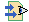
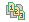

Getting started
Getting started
(Use the "View Refs" link in the toolbar if icons are turned off.) Sometimes webs will have a search page which will allow you to search through all of the pages for a specific sub-string. You can also click on the search icon (or "Search All Pages" link, if icons are turned off):
Once you are using WebWeb on a regular basis, you might want to see only the pages that have recently been updated. The "recent changes" icon (or "Recent Changes" link in the toolbar, if icons are off) takes you to such a list:
